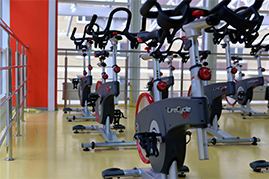
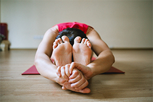
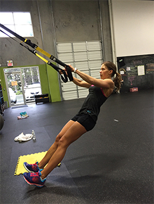
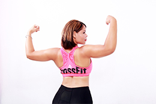
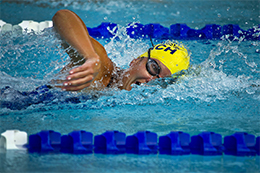

Услуги
- фитнес
Фитнес
Фитнес - это основное направление в нашем центре. Открыто 6 залов для занятий с 7-00 до 22-00. Работают 24 фитнес-тренера, есть авторские и классические программы для похудения, восстановления фигуры, здоровья и молодости. Занятия с персональным тренером помогут достичь максимального результата в сжатые сроки. - диетолог
Личный диетолог
Поможет вам получить более заметный результат от тренировок. Создаст меню на каждый день, с учетом вкусовых предпочтений и особенностей здоровья. Проанализирует текущий рацион и укажет на ошибки. Поможет сделать питание разнообразным и полезным, объяснит доступно о важной роли тех или иных витаминов и микроэлементов. - йога
Йога
Гармония души и тела – это базовая составляющая здоровья и красоты. Наш зал для занятий йоги открыт для людей всех возрастов без ограничений. Отдельным направлением является йога для беременных с более щадящей программой. Йога тренеры имеют сертификаты и являются победителями международных конкурсов.. - петли tpx
Петли ТРХ
Новое направление для нашего центра, которое стало одним из самых популярных и востребованных. Программа TRX Suspension Training создана для людей с начальным уровнем подготовки и позволяет эффективно тренироваться, используя нарастающую нагрузку, которая зависит от силы и массы человека. Петли усиливают ловкость, гибкость и подвижность. В нашем центре проводятся индивидуальные и групповые тренировки ТРХ. - кроссфит
Кроссфит
Авторская запатентованная программа тренировки, включающая элементы тяжелой атлетики, занятий с гирями, гимнастики. Данная программа безупречно подходит для ежедневных тренировок людям с сидячим образом жизни. Преимущество кроссфита в том, что он одинаково хорошо воспринимается и мужчинами, и женщинами и подходит для семейных групповых тренировок. Высокая эффективности программы обусловлена чуткими рекомендациями наших сертифицированных тренеров. - бассейн
Бассейн
Большой 50 метровый бассейн, разделенный на 6 дорожек, позволит заниматься индивидуальным плаванием или аквааэробикой. Занятия проводит сертифицированный тренер – Ситник Ирина Валерьевна, известная своими успехами в школе подготовки олимпийского резерва. В бассейне есть место для занятий с детьми (ежедневно с 12-00 до 14-00), а также проводится аквааэробика для беременных каждый день в 10-00 и 19-00.